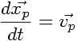
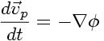
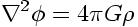

Figure 1. Real and ghost grids in a hierarchy; real and ghost zones in a grid.
This section provides a very short overview of the algorithms used by the Enzo code. References to texts and journal articles providing a more complete discussion of the algorithms are included at the end of this page for the interested reader. As of this writing (January 2004) a formal Enzo method paper has not been published, but is in preparation. Much of the text and images on this page have been taken from one of the Laboratory for Computational Astrophysics contributions to the 2003 AMR conference.[1]
Enzo is written in a mixture of C++ and Fortran 77. High-level functions and data structures are implemented in C++ and computationally intensive lower-level functions are written in Fortran. Enzo is parallelized using the MPI message-passing library and uses the HDF 5 data format to write out data and restart files in a platform-independent format.
Enzo allows hydrodynamics in 1, 2 and 3 dimensions using the structured adaptive mesh refinement (SAMR) technique developed by Berger and Collela. [2] The code allows arbitrary integer ratios of parent and child grid resolution and mesh refinement based on a variety of criteria, including baryon and dark matter overdensity or slope, the existence of shocks, Jeans length, and cell cooling time. The code can also have fixed static nested subgrids, allowing higher initial resolution in a subvolume of the simulation. Refinement can occur anywhere within the simulation volume or in a user-specified subvolume.
The AMR grid patches are the primary data structure in \enzo. Each individual patch is treated as an individual object, and can contain both field variables and particle data. Individual patches are organized into a dynamic distributed AMR mesh hierarchy using arrays of linked lists to pointers to grid objects. The code uses a simple dynamic load-balancing scheme to distribute the workload within each level of the AMR hierarchy evenly across all processors.
Although each processor stores the entire distributed AMR hierarchy, not all processors contain all grid data. A grid is a real grid on a particular processor if its data is allocated to that processor, and a ghost grid if its data is allocated on a different processor. Each grid is a real grid on exactly one processor, and a ghost grid on all others. When communication is necessary, MPI is used to transfer the mesh or particle data between processors. The tree structure of a small illustrative 2D AMR hierachy - six total grids in a three level hierarchy distributed across two processors - is shown on the left in Figure 1.
Each data field on a real grid is an array of zones with dimensionality equal to that of the simulation (typically 3D in cosmological structure formation). Zones are partitioned into a core block of real zones and a surrounding layer of ghost zones. Real zones are used to store the data field values, and ghost zones are used to temporarily store values from surrounding areas, ie, neighboring grids, parent grids or external boundary conditions, when required for updating real zones. The ghost zone layer is three zones deep in order to accomodate the computational stencil in the hydrodynamics solver (See below), as indicated in the right panel in Figure 1. These ghost zones can lead to significant computational and storage overhead, especially for the smaller grid patches that are typically found in the deeper levels of an AMR grid hierarchy.
For more information on Enzo implementation and data structures, see references [3], [4], [5] and [6]
The dynamics of large-scale structures are dominated by dark matter, which accounts for approximately 85% of the matter in the universe but can only influence baryons via gravitational interaction. There are many other astrophysical situations where gravitational physics is important as well, such as galaxy collisions, where the stars in the two galaxies tend to interact in a collisionless way.
Enzo uses the Particle-Mesh N-body method to calculate collisionless particle dynamics. This method follows trajectories of a representative sample of individual particles and is much more efficient than a direct solution of the Boltzmann equation in most astrophysical situations. The particle trajectories are controlled by a simple set of coupled equations (for simplicity, we omit cosmological terms):

and
Where xp and vp are the particle position and velocity vectors, respectively, and the term on the right-hand side of the second equation is the gravitational force term. The solution to this can be found by solving the elliptic Poisson's equation:

where ρ is the density of both the collisional fluid (baryon gas) and the collisionless fluid (particles).
These equations are finite-differenced and for simplicity are solved with the same timestep as the equations of hydrodynamics. The dark matter particles are sampled onto the grids using the triangular-shaped cloud (TSC) interpolation technique to form a spatially discretized density field (analogous to the baryon densities used to calculate the equations of hydrodynamics) and the elliptical equation is solved using FFTs on the triply periodic root grid and multigrid relaxation on the subgrids. Once the forces have been computed on the mesh, they are interpolated to the particle positions where they are used to update their velocities.
The primary hydrodynamic method used in Enzo is based on the piecewise parabolic method (PPM) of Woodward & Colella [7] which has been significantly modified for the study of cosmology. The modifications and several tests are described in much more detail in [8], and we recommend that the interested reader look there.
PPM is a higher-order-accurate version of Godunov's method with third-order-accurate piecewise parabolic monotolic interpolation and a nonlinear Riemann solver for shock capturing. It does an excellent job capturing strong shocks and outflows. Multidimensional schemes are built up by directional splitting, and produce a method that is formally second-order-accurate in space and time and explicitly conserves energy, momentum and mass flux. The conservation laws for fluid mass, momentum and energy density are written in comoving coordinates for a Friedman-Robertson-Walker spacetime. Both the conservation laws and Riemann solver are modified to include gravity, which is calculated as discussed above.
There are many situations in astrophysics, such as the bulk hypersonic motion of gas, where the kinetic energy of a fluid can dominate its internal energy by many orders of magnitude. In these situations, limitations on machine precision can cause significant inaccuracy in the calculation of pressures and temperatures in the baryon gas. In order to address this issues, Enzo solves both the internal gas energy equation and the total energy equation everywhere on each grid, at all times. This dual energy formalism ensures that the method yields the correct entropy jump at strong shocks and also yields accurate pressures and temperatures in cosmological hypersonic flows. See reference [8] for more information about the dual energy formalism.
As a check on our primary hydrodynamic method, we also include an implementation of the hydro algorithm used in the Zeus astrophysical code. [9], [10] This staggered grid, finite difference method uses artificial viscosity as a shock-capturing technique and is formally first-order-accurate when using variable timesteps (as is common in structure formation simulations), and is not the preferred method in the Enzo code.
The cooling and heating of gas is extremely important in astrophysical situations. To this extent, two radiative cooling models and several uniform ultraviolet background models have been implemented in an easily extensible framework.
The simpler of the two radiative cooling models assumes that all species in the baryonic gas are in equilibrium and calculates cooling rates directly from a cooling curve assuming Z = 0.3 Zo. The second routine, developed by Abel, Zhang, Anninos & Norman [11], assumes that the gas has primordial abundances (ie, a gas which is composed of hydrogen and helium, and unpolluted by metals), and solves a reaction network of 28 equations which includes collisional and radiative processes for 9 seperate species (H, H+, He, He+, He++, H-, H2+, H2, and e-). In order to increase the speed of the calculation, this method takes the reactions with the shortest time scales (those involving H- and H2+) and decouples them from the rest of the reaction network and imposes equilibrium concentrations, which is highly accurate for cosmological processes. See [11] and [12] for more information. The vast majority of the volume of the present-day universe is occupied by low-density gas which has been ionized by ultraviolet radiation from quasars, stars and other sources. This low density gas, collectively referred to as the ``Lyman-α Forest'' because it is primarily observed as a dense collection of absorption lines in spectra from distant quasars (highly luminous extragalactic objects), is useful because it can be used to determine several cosmological parameters and also as a tool for studying the formation and evolution of structure in the universe (see [13] for more information). The spectrum of the ultraviolet radiation background plays an important part in determining the ionization properties of the Lyman-α forest, so it is very important to model this correctly. To this end, we have implemented several models for uniform ultraviolet background radiation based upon the models of Haardt & Madau [14].
One of the most important processes when studying the formation and evolution of galaxies (and to a lesser extent, groups and clusters of galaxies and the gas surrounding them) is the formation and feedback of stars. We use a heuristic prescription similar to that of Cen & Ostriker [15] to convert gas which is rapidly cooling and increasing in density into star ``particles'' which represent an ensemble of stars. These particles then evolve collisionlessly while returning metals and thermal energy back into the gas in which they formed via hot, metal-enriched winds.
Enzo uses a grid-based parallelization scheme for load balancing. The root grid is partitioned up into N pieces (where N is the number of processors), and each processor is given a piece of the root grid, which it keeps for the duration of the simulation run. Subgrids are treated as independent objects and are distributed to the processors such that each level of grids is load-balanced across all processors. Boundary fluxes between neighboring grid patches and parent and children grids are passed back and forth using MPI commands.
The one portion of the code that is parallelized differently is the root grid gravity solver. As discussed above, the gravitational potential on the root grid is solved using a fourier transform method, which requires its own message-passing routines. The three-dimensional total density field (composed of the dark matter plus baryon density on the root grid) is decomposed into two-dimensional slabs (requiring one set of messages), which are then fourier transformed. The slabs are then transposed along another axis (requiring a second set of messages to be passed) and transformed again, and a third set of messages is required in order to obtain the original block decomposition. This is unavoidable when using a fourier transform scheme, and as a result the speed of the root grid gravity solver is very sensitive to the speed of the communication network on the platform that Enzo is being run on.
A somewhat detailed description of the method Enzo uses to create initial conditions can be downloaded as a postscript or PDF document. To summarize: Dark matter particles and baryon densities are laid out on a uniform Cartesian grid. Given a user-specified power spectrum P(k), the linear density fluctuation field is calculated at some initial time (typically z = 100 for high-resolution/small box simulations) by using P(k) to obtain the density fluctuations in k-space on a uniform Cartesian grid. P(k) is sampled discretely at each grid point, with the density fluctuations having a random complex phase and amplitude. The amplitude is generated such that the distribution of amplitudes is Gaussian. This cube is then fourier transformed to give physical density fluctuations. Particle positions and velocities and baryon velocities are calculated using the Zel'Dovich approximate. See the document above, or read Bertschinger 1998 [16] for more information.
[1] B. W. O'Shea et al. "Introducing Enzo, an AMR Cosmology
Application." To be published in Adaptive Mesh Refinement - Theory And Applications,
the proceedings from the 2003 University of Chicago AMR Workshop
[2] M. J. Berger and P. Colella. "Local adaptive mesh refinement for shock hydrodynamics,"
J. Comp. Phys, 82:64-84, 1989
[3] G. L. Bryan. "Fluids in the universe: Adaptive mesh in Cosmology."
Computing in Science and Engineering, 1:2, 1999
[4] G. L. Bryan and M. L. Norman. "A hybrid AMR application for cosmology and astrophysics."
In Workshop on Structured Adaptive Mesh Refinement Grid Methods", p. 165.
IMA Volumes in Mathematics #117, 2000
[5] G. L. Bryan and M. L. Norman. In D.A. Clarke and M. Fall, editors,
Computational Astrophyiscs: 12th Kingston Meeting on Theoretical Astrophysics,
proceedings of a meeting held in Halifax; Nova Scotia; Canada Oct. 17-19, 1996.
ASP Conference Series #123, 1997
[6] M. L. Norman and G. L. Bryan. "Cosmological Adaptive Mesh Refinement."
In Kohji Tomisaka, Shoken M. Miyama and Tomoyuki Hanawa, editors,
Numerical Astrophysics: Proceedings of the International Conference on Numerical Astrophysics 1998,
p. 19. Kluwer Academics, 1999
[7] P. R. Woodward and P. Colella. "A piecewise parabolic method for gas dynamical simulations,"
J. Comp. Phys, 54:174, 1984
[8] G. L. Bryan, M. L. Norman, J. M. Stone, R. Cen and J. P. Ostriker. "A piecewise
parabolic method for cosmological hydrodynamics,"
Comp. Phys. Comm., 89:149, 1995
[9] J. M. Stone and M. L. Norman. "Zeus-2D: A radiation magnetohydrodynamics code for
astrophysical flows in two space dimensions. I. The hydrodynamics algorithms and tests."
The Astrophysical Journal, 80:753, 1992
[10] J. M. Stone and M. L. Norman. "Zeus-2D: A radiation magnetohydrodynamics code for
astrophysical flows in two space dimensions. II. The magnetohydrodynamic algorithms and tests."
The Astrophysical Journal, 80:791, 1992
[11] T. Abel, P. Anninos, Y. Zhang and M.L. Norman. "Modeling primordial gas in numerical cosmology."
New Astronomy, 2:181-207, August 1997
[12] P. Anninos, Y. Zhang, T. Abel and M.L. Norman. "Cosmological hydrodynamics with multispecies chemistry
and nonequilibrium ionization and cooling." New Astronomy, 2:209-224, August 1997
[13] M. Rauch. "The Lyman Alpha Forest in the Spectra of QSOs." Annual Review of Astronomy and
Astrophysics, 36:267-316, 1998
[14] F. Haardt and P. Madau. "Radiative Transfer in a Clumpy Universe, II. The Ultraviolet Extragalactic
Background." The Astrophysical Journal, 461:20, 1996
[15] R. Cen and J.P. Ostriker. "Galaxy formation and physical bias." The Astrophysical Journal Letters, 399:L13, 1992
[16] E. Bertschinger. "Computer Simulations in Cosmology." Annual Review of Astronomy and Astrophysics, 36:599
Previous - Index
Next - Generating Initial conditions